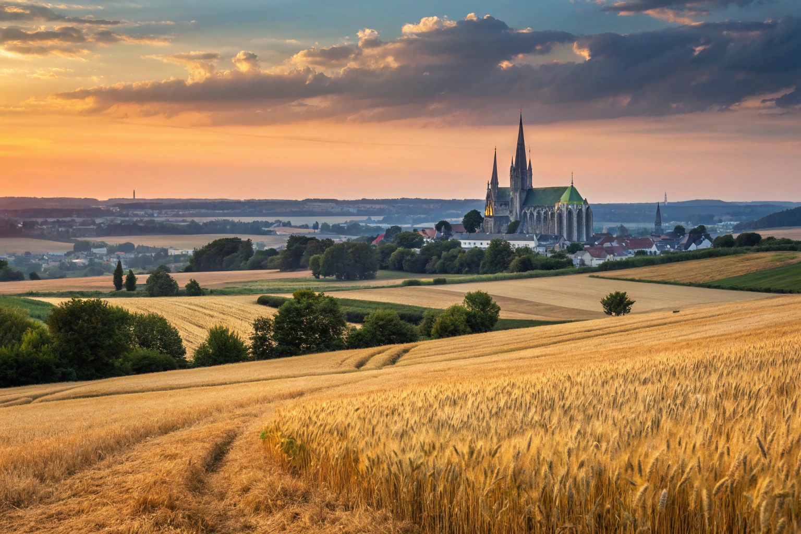

Paysage & terroir
La Beauce,
source d’inspiration.
Les grands horizons de Beauce inspirent une cuisine généreuse, attentive aux céréales et aux produits de saison.
Le paysage beauceron
Des horizons ouverts,
une identité agricole.
Les grands horizons, les champs de céréales et la lumière dorée composent un paysage ouvert, qui donne son caractère à la région.
Les tons de blé, les verts doux et la lumière dorée évoquent ces paysages ouverts et leur identité agricole.
Cette cuisine puise dans les paysages agricoles et les saveurs généreuses de la Beauce. Découvrir le plat ou retrouver la recette.
